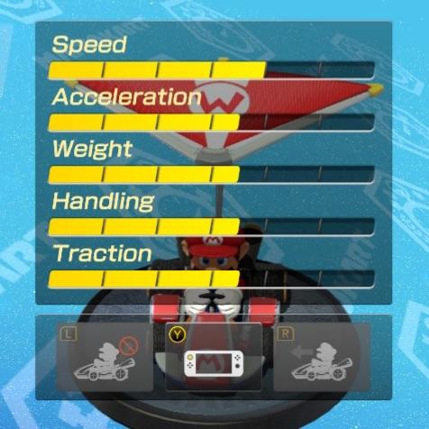

Build Calculator
insert build calculator here
How the Build Calculator works
The Build Calculator collects the stats of the selected driver, kart, tire, and glider, and calculates the total stats for the build.
This calculator follows a two step process to calculate the total stats for a build.
1. speedLevel = selectedCharacter.speed + selectedKart.speed + selectedTire.speed + selectedGlider.speed
The game first sums up each stat for the selected character, kart, tire, and glider to determine the overall speed level of the build. This results in a value (in this case speedValue)
2. speedValue = (speedLevel + 3) / 4;To get the stats to appear correctly in game, the value is added by 3 and then divided by 4 to get the average. This is the stat that appears in game.
